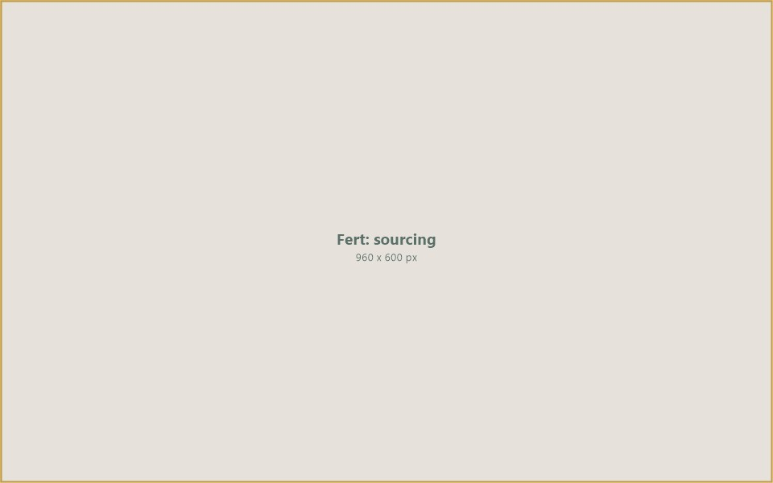
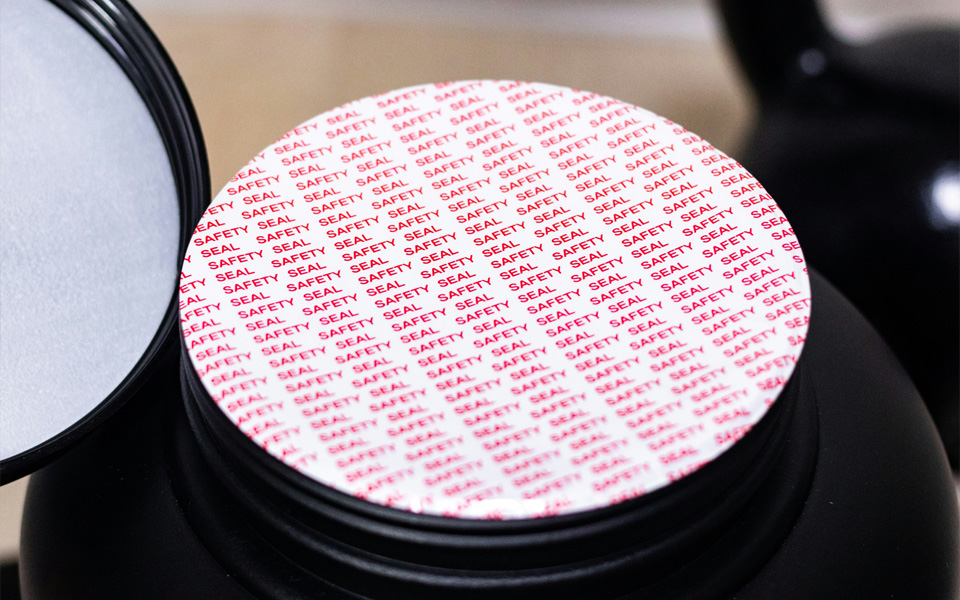
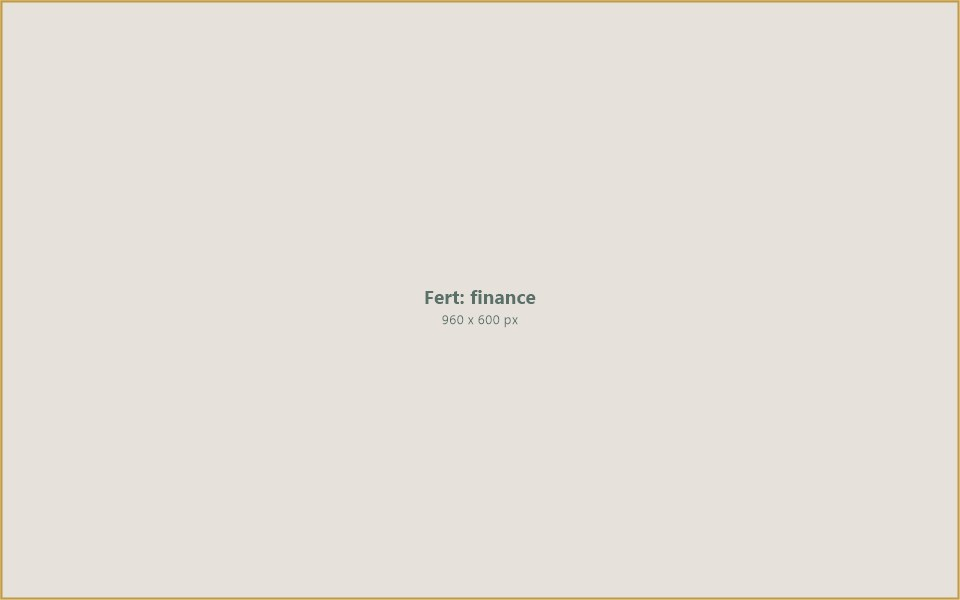
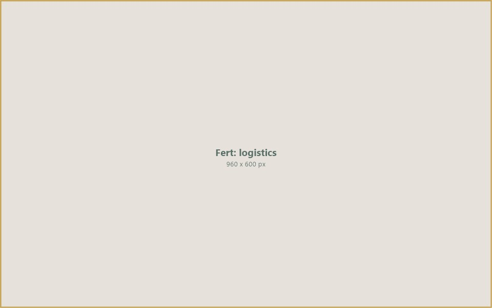

Fertilizers & Industrial Commodities
Supplying agricultural fertilizers and industrial-grade commodities to international markets — connecting verified producers with buyers through structured trading and trade finance solutions.
Supporting Global Agriculture & Industry
Fertilizers are essential inputs for global food production. As agricultural demand grows across developing markets, the need for reliable, competitively priced fertilizer supply has never been greater. Yet many buyers face challenges in accessing verified producers, securing competitive pricing, and arranging the trade finance needed to complete large-volume transactions.
IIC Worldwide operates as a commodity trading platform connecting fertilizer producers with agricultural buyers, distributors, and government procurement agencies across the Middle East, Africa, Asia, and Europe. Our platform bridges the gap between supply and demand — ensuring that essential crop inputs reach the markets that need them most.
Beyond fertilizers, we also facilitate the international trade of industrial-grade sulphur and other industrial commodities, serving the chemical, manufacturing, and processing sectors through our verified supplier network.
By combining sourcing expertise with trade finance, quality verification, and logistics coordination, IIC ensures that fertilizer and industrial commodity transactions are structured, bankable, and executed with confidence.
How We Facilitate Fertilizer Trade
IIC connects every stage of the fertilizer supply chain — from producer sourcing and quality certification to trade finance and international delivery.

Producer Sourcing960 x 600 pxProducer Sourcing & Verification
IIC maintains a network of verified fertilizer producers and manufacturers across major producing regions. Every supplier undergoes due diligence for production capacity, product quality, regulatory compliance, and export capability. Our sourcing team identifies the right producer for each procurement requirement — whether a government agency needs bulk urea for a national agricultural programme or a distributor requires consistent NPK supply for retail markets.

Quality & Compliance960 x 600 pxQuality Assurance & Certification
Fertilizer quality directly impacts crop yields and soil health. IIC coordinates pre-shipment inspections, laboratory analysis, and certification to verify that every consignment meets the grade specifications, nutrient content, and regulatory standards required by the destination market. We work with accredited inspection agencies to ensure product integrity from factory gate to port of discharge.

Trade Finance960 x 600 pxTrade Finance Solutions
Fertilizer transactions are capital-intensive and often involve large volumes shipped across long distances. IIC provides structured trade finance solutions — including letters of credit, pre-shipment financing, and payment guarantees — that enable buyers to procure the volumes they need while managing cash flow. Our financial products are designed for the realities of bulk commodity trade, with terms aligned to shipping schedules and seasonal demand patterns.

Logistics & Delivery960 x 600 pxInternational Logistics & Delivery
Moving bulk fertilizers across international borders requires coordinated logistics — from bagging and containerisation to ocean freight, port handling, and inland distribution. IIC manages the full logistics chain, working with freight partners, shipping lines, and port operators to ensure timely delivery. We handle customs clearance, documentation, and regulatory compliance for each destination country, minimising delays and ensuring that fertilizers arrive when farmers need them.
Fertilizers & Industrial Commodities We Trade
We facilitate the international trade of key fertilizer products and industrial commodities, connecting verified producers with buyers across global markets.
Urea
Agricultural-grade urea (46-0-0) for international markets — sourced from major producing regions and delivered in prilled and granular forms to distributors, cooperatives, and government procurement agencies.
Sulphur
Industrial-grade sulphur supply for global industries — including fertilizer manufacturing, chemical processing, and industrial applications. Available in lump, granular, and liquid forms from verified refinery and gas-processing sources.
DAP (Diammonium Phosphate)
High-phosphorus fertilizer (18-46-0) widely used as a starter fertilizer and for broadacre application — sourced from leading producers for agricultural markets across Africa, Asia, the Middle East, and Europe.
MAP (Monoammonium Phosphate)
A versatile phosphorus-based fertilizer (11-52-0) used in a wide range of soil types and crops — traded in bulk for agricultural distributors, blending operations, and institutional buyers.
NPK (Compound Fertilizers)
Balanced NPK compound fertilizers in various formulations tailored to specific crop and soil requirements — connecting blending plants and manufacturers with agricultural markets worldwide.
IIC Worldwide is building a trusted trading platform for fertilizers and industrial commodities — ensuring that the essential inputs for global agriculture and industry reach the markets that need them. By connecting verified producers with qualified buyers and providing the trade finance to close transactions, we help strengthen food security and industrial capacity across emerging markets.
Our vision is a supply chain where legitimate fertilizer trade flows efficiently — where producers access international markets, buyers receive verified products at competitive terms, and the financial infrastructure exists to make every viable transaction possible.
Trade Fertilizers & Industrial Commodities
Connect with IIC Worldwide to explore sourcing opportunities, trade finance solutions, and access to verified fertilizer and industrial commodity markets.